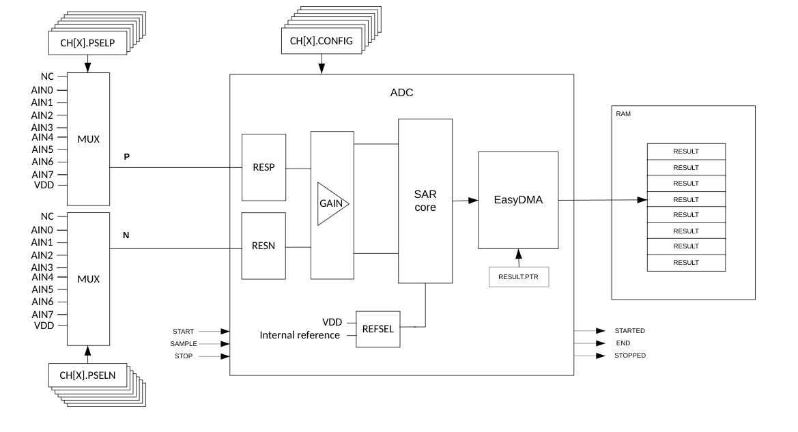
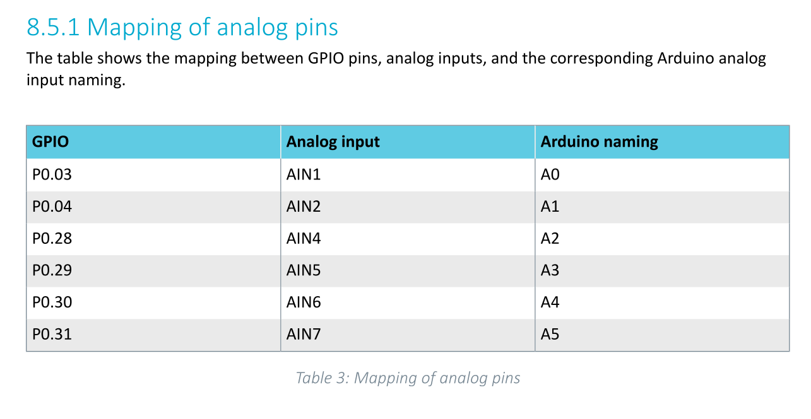
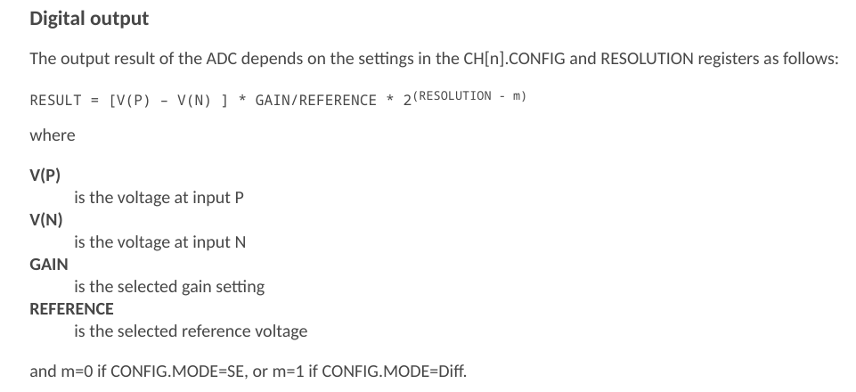
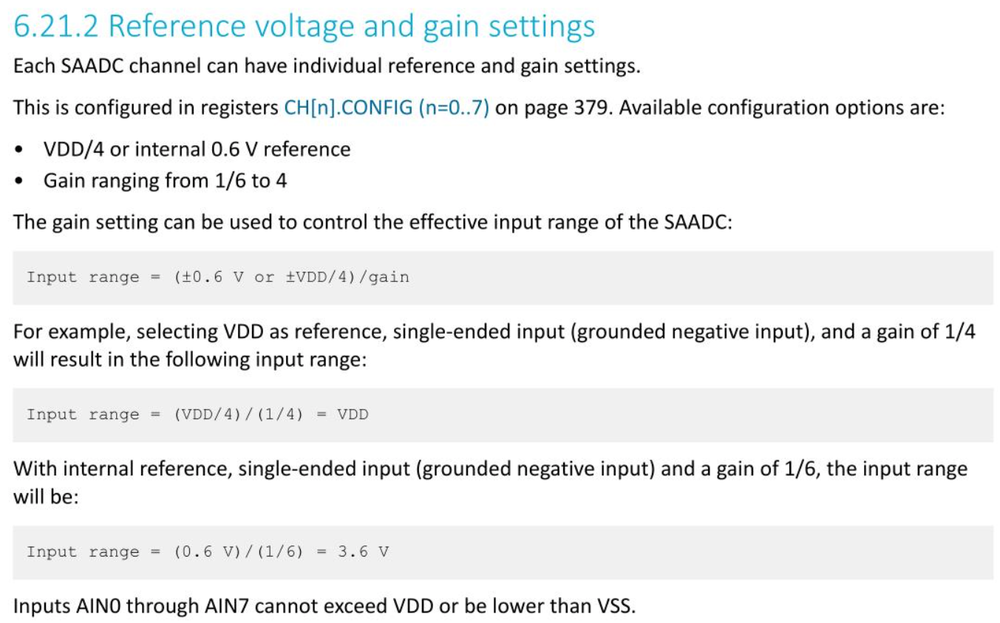
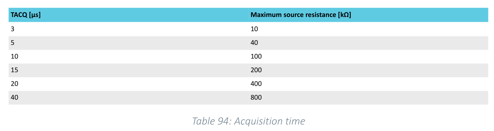

Zephyr: Analog-to-Digital Conversion
BME554L -Fall 2025 - Palmeri
Introduction
- The
nRF52833uses a Sucessive Approximation ADC (SAADC). - The SAADC is a differential ADC.
- That one SADDC is multiplexed to 8 channels (GPIO pins).

How does an SAADC work?
prj.conf
CONFIG_ADC=y
Devicetree Overlay
// This is the root level of the DT
/ {
zephyr,user {
io-channels = <&adc 0>; // need to "activate" these channels for IO usage
};
aliases {
vadc = &vadc;
}
}
// This is modifying the existing ADC node in the DT
&adc {
#address-cells = <1>;
#size-cells = <0>;
vadc: channel@0 {
reg = <0>; // channel number
zephyr,reference = "ADC_REF_INTERNAL"; // voltage ref for SA (0.6 V)
zephyr,gain = "ADC_GAIN_1_5"; // gain factor to scale ref voltage (1/gain)
zephyr,acquisition-time = <ADC_ACQ_TIME_DEFAULT>;
zephyr,input-positive = <NRF_SAADC_AIN0>; // P0.02
zephyr,resolution = <12>; // bit depth
};
status = "okay"; // enable the ADC
};
How Digital Output is Calculated

RESULT is stored as 16-bit 2’s complement values.
Reference Voltage
- Only
ADC_REF_INTERNAL(0.6 V) andADC_REF_VDD_1_4are valid on thenRF52833. - When using
VDD(3.0 V) as a reference, you need to also specify the nominal reference voltage in the Devicetree: e.g.,zephyr,vref-mv = <750>;(3.0 V / 4) ADC_REF_INTERNALis based on a diode threshold voltage and is more stable.ADC_REF_VDD_1_4can drift with fluctuations inVDD(which can be a good thing).

main.c
/* Load the ADC library that you ennabled in prj.conf */
#include <zephyr/drivers/adc.h>
/* Define some macros to use some Zephyr macros to help read the DT
configuration based on the ADC channel alias (I have no idea why this
macro is not available in adc.h) */
#define ADC_DT_SPEC_GET_BY_ALIAS(adc_alias) \
{ \
.dev = DEVICE_DT_GET(DT_PARENT(DT_ALIAS(adc_alias))), \
.channel_id = DT_REG_ADDR(DT_ALIAS(adc_alias)), \
ADC_CHANNEL_CFG_FROM_DT_NODE(DT_ALIAS(adc_alias)) \
} \
/* Intialize the ADC struct to store all the DT parameters */
static const struct adc_dt_spec adc_vadc = ADC_DT_SPEC_GET_BY_ALIAS(vadc);
/* Check that the ADC interface is ready */
if (!device_is_ready(adc_vadc.dev)) {
LOG_ERR("ADC controller device(s) not ready");
return -1;
}
/* Configure the ADC channel */
err = adc_channel_setup_dt(&adc_vadc);
if (err < 0) {
LOG_ERR("Could not setup ADC channel (%d)", err);
return err;
}Reading Data from the ADC Buffer
- Data are stored in a DMA buffer (separate from any CPU activity)
- The kernel must copy the data from the DMA buffer to a kernel-accessible buffer.
- An
adc_sequencestruct is used to store the buffer and buffer size.
// Note that the buffer must be int16_t (16-bit integer) to store the ADC data
int16_t buf;
struct adc_sequence sequence = {
.buffer = &buf,
.buffer_size = sizeof(buf), // bytes
};Reading the ADC buffer requires:
- Initializing the ADC to make a measurement (each time you need to make a measurement).
- Read the resultant data and store it in the buffer (in the
adc_sequencestruct).
LOG_INF("Measuring %s (channel %d)... ", adc_vadc.dev->name, adc_vadc.channel_id);
(void)adc_sequence_init_dt(&adc_vadc, &sequence);
int ret;
ret = adc_read(adc_channel.dev, &sequence);
if (ret < 0) {
LOG_ERR("Could not read (%d)", ret);
} else {
LOG_DBG("Raw ADC Buffer: %d", buf);
}Converting the ADC Buffer to Millivolts
- The ADC buffer yields a 16-bit integer, but the ADC was set to 12-bits in the DT.
- Converting the ADC buffer data to actual voltages requires scaling the ADC buffer data by the reference voltage and the gain factor.
int32_t val_mv; //note that adc_raw_to_millivolts_dt() takes a int32_t* to modify the value in place
val_mv = buf; // val_mv is now the raw ADC value
ret = adc_raw_to_millivolts_dt(&adc_vadc, &val_mv); // remember that the vadc struct containts all the DT parameters
// val_mv now contains the ADC value in millivolts
// add in some error checking
if (ret < 0) {
LOG_ERR("Buffer cannot be converted to mV; returning raw buffer value.");
} else {
LOG_INF("ADC Value (mV): %d", val_mv);
}Reading Multiple Samples at Specified Intervals
- ADC sequence can be configured to perform multiple measurements (
extra_samplings) in a single sequence.
- The buffering of multiple data points per acquisition can be useful for sampling data at a fixed sampling rate without hitting the kernel too often with a kernel-based timer.
- The ADC can be configured to execute a callback function after each sample is collected.
- To enable the extra samples, you need to add an optional adc_sequence_options struct to the
adc_sequencestruct. Theadc_sequence_optionsstruct contains the members shown below.
Be careful in how you calculate the buffer size for your array, depending on the scope of the array.
struct adc_sequence_options options = {
.extra_samplings = BUFFER_ARRAY_LEN - 1, // -1 b/c first sample is already in the buffer
.interval_us = 100, // 100 us between samples
// .callback = NULL, // called after each sample is collected
};
struct adc_sequence sequence = {
.options = &options, // add the options to the sequence
.buffer = &buf, // buf is now a pointer to the first index of an array
.buffer_size = sizeof(buf), // need to specify the size of the buffer array in bytes
/* If the buffer is not global or local in scope, the buffer (array) name will just be a pointer to
the first element of the array! The buffer_size will need to be calculated as the product of the
size (in bytes) of this first index and the length of the array (number of indices in the array)
.buffer_size = BUFFER_ARRAY_LEN * sizeof(buf), // non-global/local array scope
*/
};ADC Acquisition Time
- Acquisition time for a single sample is specified in the DT ADC node:
zephyr,acquisition-time = <ADC_ACQ_TIME(ADC_ACQ_TIME_MICROSECONDS, 40)>; - There are only a discrete number of valid acquisition times (
TACQ):

The acquisition time is not absolutely accurate and can dependent on many system factors, especially when dependent on the kernel counters.
If you do not specify a sampling interval (interval_us) in the adc_sequence_options struct, the ADC will sample sequencial samples at the acquisition time.
Asynchronous ADC
adc_read()is blocking, meaning that your kernel thread will wait for the ADC to complete before continuing.- Timers and interrupts can be used to perform other tasks while the ADC is running.
- Interrupting threads can come at the expense of the acquisition time accuracy of the ADC.
- If you want to perform other tasks while the ADC is running, you can use the asynchronous ADC API.
- This functionality needs to be enabled in the
prj.conffile:CONFIG_ADC_ASYNC=y. - adc_read_async() is the asynchronous version of
adc_read().
- This functionality needs to be enabled in the
Asynchronous ADC Callback
- Use a adc_sequence_callback function to handle the ADC data after each sample is read.
- There are defined ADC action enumerations that can be returned by the callback to handle progression through the sequence:
ADC_ACTION_CONTINUE: The sequence should be continued normally.ADC_ACTION_REPEAT: New samples or sample should be read from the ADC and written in the same place as the recent ones.ADC_ACTION_FINISH: The sequence should be terminated.
Logging Arrays
- Logging the values in an array to the serial terminal can be done using the
LOG_HEXDUMP_INF()function. This function takes a pointer to the array, the size of the array, and the number of bytes to display per line. The function will display the array in hexadecimal format.
Remember that these HEX values are storing data in twos complement.
The logging module can also require non-trivial amounts of memory. Immediate / deferred / optimized logging configurations can significantly impact the stack usage.